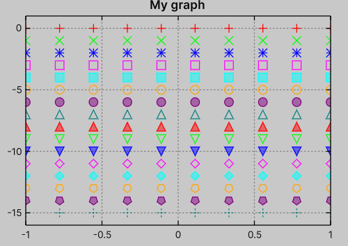
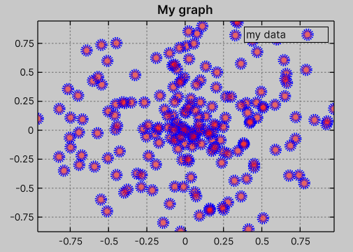

Plot with points
Data
Similar to PlotWithLines, the point plotting type requires IReadOnlyList<float2> data.
This method renders points within the graph view, and all NaN values are ignored.
var graph = new Graph { ... };
var data = new float2[] { ... };
graph.PlotWithPoints(data);
Styling
Similar to PlotWithLines, the package defines a default style palette in the USS document, and each plot (regardless of type) is assigned the next style index, i.e. USS classes .style-1, .style-2, ..., up to .style-16.
See Plot with Lines#Styling for details about how .style-... classes are handled.
In other words, when plotting multiple graphs, the plots are automatically styled according to this palette without the need for custom configuration, for example:
var graph = new Graph { ... };
for (int i = 0; i < 16; i++)
{
var y0 = -i;
graph.PlotWithLines(Sequence.Uniform(x => y0));
}
will be rendered as

The package provides 16 predefined marker primitives.
In Advanced/Custom Point Style, you can learn how to define custom marker shapes.
Similar to PlotWithLines, you can configure styling via USS or C# by predefining a theme.
You can customize point size, point width (which controls the stroke line width), point style, point color (stroke), point fill color (by default using a reduced alpha of the point color), and dash pattern (stroke).
